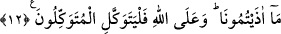

12. “Hem bize yollarımızı göstermişken neden Allah’a dayanıp güvenmeyelim?
Sizin bize verdiğiniz eziyete elbette katlanacağız. Tevekkül edenler yalnız Allah’a
tevekkülde sebat etsinler.”
“Hem bize yollarımızı göstermişken” her birimize dinde girmemizi meşrû ve zorunlu
kıldığı yola ve usûle irşâd etmişken “neden Allah’a dayanıp güvenmeyelim?” O’na
tevekkül etmememiz için hangi mâzerete sığınabiliriz? O’nun bize yol göstermesi,
tevekkülü zorunlu ve gerekli kılar.
et-Te’vîlâtü’n-Necmiyye’de şöyle der: “Burada zikredilen yollar, îmân, ma‘rifet ve
muhabbet yollarıdır. Çünkü bunlar Hakk’a ulaşmanın yolları ve makamlarıdır.”
Kâfirlerin yaptığı işkence ve eziyetler tevekküle zarar verecek ve sıkıntıya sokacak
şeylerden olduğu için peygamberler, son derece kararlı olduklarını göstererek yemine
benzer bir te’kid ile şöyle dediler: “Sizin bize” canlarımızı ve mallarımıza yaptığınız
işkencelere ya da yalanlayarak, dâveti reddederek, Allah’tan yüz çevirerek, inatçılık
yaparak, mucizeler isteyerek ve diğer hayırsız davranışlarda bulunarak bize “verdiğiniz
eziyete elbette katlanacağız.”
“Tevekkül edenler yalnız Allah’a tevekkülde sebat etsinler.” Yâni tevekkül sâhipleri,
îmanlarından kaynaklanan tevekkülde sâbit kadem olsunlar. Önceki âyetteki tevekkül
emri, ilk defa tevekkül etmeyi; bu âyetteki ise tevekkülde sebat etmeyi emretmektedir.
Onun için bir tekrar söz konusu değildir.
Tevekkül, işi bütün işlerin sâhibine havâle etmek demektir. Derler ki: Tevekkül sâhibi
odur ki bir sıkıntıyla karşılaştığı zaman onu Allah’a isyan olan bir şeyle savmaya
çalışmaz. Bu bakımdan insan bir sıkıntıya düşüp birisinden kendisini bundan
kurtarmasını istese tevekkül sınırlarını aşmış olmaz. Çünkü başına gelen o sıkıntıyı
Allah’a isyan olan bir şeyle kendisinden savmaya çalışmamıştır.
et-Te’vîlâtü’n-Necmiyye’de şöyle der: “Tevekkülün makamları vardır: Mübtedînin
(işin başındaki sâlikin) tevekkülü, müsebbibe (sebepleri yaratana) güvenerek merâmını
taleb konusunda sebeplere bel bağlamamaktır. Mutavassıtın (yolun yarısındaki sâlikin)
tevekkülü, müsebbibe bel bağlayarak sebeplerden alâkayı kesmektir. Müntehînin (yolun
sonundaki sâlikin) tevekkülü ise Allah’a bağlanarak mâsivâdan alâkayı kesmektir.”
Kuşeyrî (r.h.) şöyle der: “Türlü ihsanları ile ilgili olarak geçmişte verdiği garantiyi
gerçekleştirdiği ve gölgesini üzerimizde olan imtihanda bizlere yardım ettiği halde
“neden Allah’a dayanıp güvenmeyelim? Sizin bize verdiğiniz eziyete elbette
katlanacağız.” Belalara sabretmek, o belayı kişinin gözünde küçültür. Bu mânâda şöyle
bir şiir söylenmiştir:
Senin için çektiğim acılar, tat verir bana